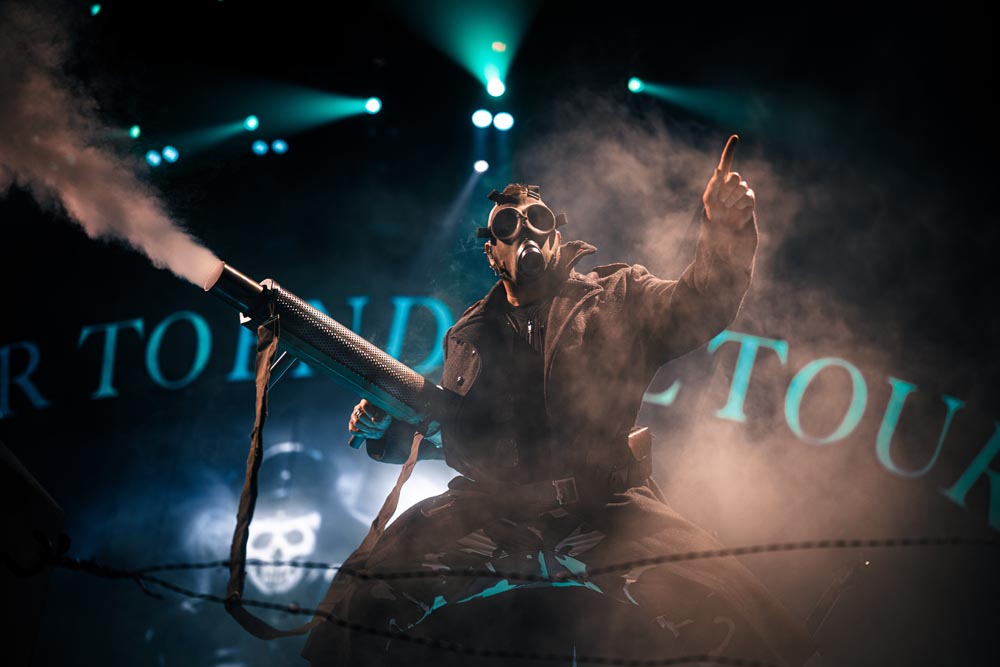

Během více než dvou desetiletí od svého vzniku se švédští metalisté Sabaton vypracovali na jednu z
nejpracovitějších kapel v oboru. Získali si legii věrných fanoušků po celém světě, vydali deset vysoce
hodnocených studiových alb (včetně dvou platinových nosičů) a získali několik cen a nominací v hudebním
průmyslu... aniž bychom zmínili spuštění svého vlastního každoročního festivalu a.
Kombinující vznešené silné riffy s okamžitě
rozpoznatelným drsným
barytonem
zpěváka Joakima Brodéna, kapela odmítá být jednoduše zařazena do žánru. Fanoušci je znají jako Sabaton:
heavymetalovou kapelu, která zpívá o skutečných válečných událostech a lidech, kteří se na nich podíleli -
o
vyčerpávajících kampaních a oslnivých činech statečnosti, o velkolepých vítězstvích a dojemných osobních
bojích - skutečné příběhy fantastičtější než jakákoli fikce.
Sabaton jsou možná nejznámější díky svým elektrizujícím živým koncertům, kombinujícím dokonalé hudební
výkony a precizně vypracované scénické show - včetně jejich nádržového bicího podia v plné velikosti - s
energií a smíchem. Kapela hrála jako hlavní hvězda na koncertech až v Severní Americe, Austrálii a
Japonsku
a pravidelně vyprodává arény a zastává špičkové pozice na festivalech po celé Evropě.

Čerstvě po dlouhém turné se kapela těší na řadu
festivalových
vystoupení
tento
léto, než se vrátí do studia pracovat na svém dalším projektu.